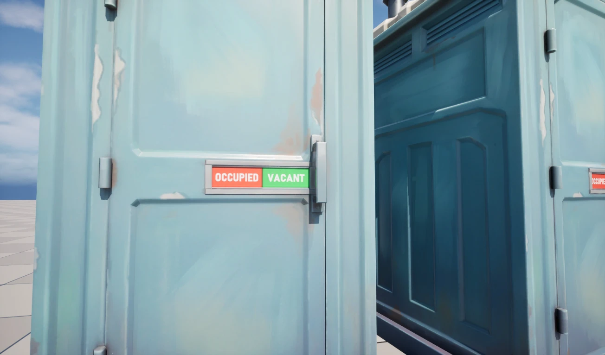

Бенч моделей · 26.11.2026
Три задачі в Unity і Blender через MCP, з тими самими промптами й перевіркою, що для Claude і GPT. Kimi і DeepSeek 26.11 прогнані заново через нашу обгортку: час, токени й збої взяті з журналів запуску, а не зі звітів самих моделей.
$ — за прайсом API самої моделі; для підписок це еквівалент, реально списується ліміт. DeepSeek — реальне списання з балансу. Час: v1 — увесь прогін, v2 і Blender — годинник задачі від першого до останнього виклику редактора. Збої — виклики інструментів, що повернули помилку. Бал ставить незалежний скрипт-перевіряльник. Один прогін на модель на тест.
1 · Kimi K3.1 Pro · Moonshot AI, Китай
MoE на 2.8T параметрів, з них ~104B активних на токен. Контекст 1M, нативно бачить картинки й відео. Відкриті ваги (1.56 TB), вихід K3.1 Pro — 24.10.2026.
API $2 за 1M вхідних, $0.20 за кешовані, $10 за вихідні. Highspeed-версія вдвічі дорожча. У нас підписка Kimi Code з 5-годинним і місячним вікном, тому $ нижче — еквівалент.
Kimi Code — термінальний агент, як Claude Code: файли, shell, MCP. Kimi Work — десктоп-агент з 3D Make (Tripo всередині), слайдами, документами, керуванням Chrome.
Сильна в агентному коді, «параметричному 3D у Blender і CAD» та іграх у Unity. Agent Swarm до ~300 субагентів. Це заяви вендора, ми перевіряли лише Unity і Blender.
$ за 3 тести за прайсом API, менше краще
хвилини на 3 тести, менше краще
бал з 50 · збої викликів інструментів, менше краще
Підсумок за 3 тести: $1.80, 23:14 хв, 4.6M токенів, 2 збої. Місце за ціною 7 з 11, за часом 7 з 11. * у прогоні 17.11 через Kimi Work збої в Blender не рахувались.
| Тест | Бал | Час | Токени | $ | Збої | Місце за ціною | Місце за часом |
|---|---|---|---|---|---|---|---|
| Unity v1 | 10/10 | 7:57 | 1.58M | $0.60 | 0 | 8 з 11 | 9 з 11 |
| Unity v2 | 20/20 | 9:44 | 2.29M | $0.82 | 2 | 6 з 11 | 8 з 11 |
| Blender | 20/20 | 5:33 | 0.77M | $0.38 | 0 | 5 з 11 | 9 з 11 |
Kimi Code проти Kimi Work: та сама модель K3.1 17.11 у десктопному Kimi Work пройшла ці три тести за 53:30, 26.11 у терміналі Kimi Code — за 23:14, у 2.3 раза швидше. Токенів у Kimi Code на третину більше (4.6M проти 3.6M), тому ціна трохи вища: $1.80 проти $1.65. Ліміт підписки: три тести забрали ~55% п'ятигодинного вікна і ~7% місячного (з 4% до 11%).
Kimi K3.1 Pro у терміналі — надійний виконавець рівня Sonnet за якістю, але повільніший і без цінової переваги. Для Unity / Blender через MCP вона не краща за Claude чи Gemini; має сенс як друга думка або резерв, коли ліміти Claude і Codex вичерпані. Kimi Work беремо лише заради 3D Make і генерації концептів, не для MCP-роботи.
2 · DeepSeek V4-Pro · DeepSeek, Китай
Лінійка V4: V4-Pro і швидка V4.1-Flash. MoE, контекст 1M, відкриті ваги під MIT. Режим міркувань між викликами інструментів. Зору в основних моделях немає.
Лише оплата за токени, без підписки. Ціни V4-Pro цього року кілька разів змінювались: у квітні −75%, восени підвищення до ~$0.66 / $1.98 за 1M у непікові години і вдвічі більше в пік. Тому тут $ — реальне списання з нашого балансу.
DeepSeek Harness (DSH): відкритий агент з вебінтерфейсом і консольним режимом, MCP через плагіни, субагенти. Статус — developer preview.
Фронтир-рівень у коді й математиці за ціною в рази нижчою, ніж OpenAI чи Anthropic. Сильний покроковий розв'язок, відкриті ваги для свого сервера.
$ за 3 тести: Claude, GPT і Gemini за прайсом API, DeepSeek — реальне списання
хвилини на 3 тести, менше краще
бал з 50 · збої викликів інструментів, менше краще
Підсумок за 3 тести: $0.52 реального списання, 24:01 хв, 8.9M токенів, 29 збоїв. Місце за ціною 2 з 11, за часом 8 з 11.
| Тест | Бал | Час | Токени | $ | Збої | Місце за ціною | Місце за часом |
|---|---|---|---|---|---|---|---|
| Unity v1 | 10/10 | 8:51 | 2.70M | $0.13 | 10 | 2 з 11 | 10 з 11 |
| Unity v2 | 20/20 | 10:58 | 4.95M | $0.26 | 19 | 2 з 11 | 9 з 11 |
| Blender | 20/20 | 4:12 | 1.30M | $0.13 | 0 | 2 з 11 | 5 з 11 |
Збої DeepSeek у Unity (29 за v1 і v2) — це помилка «unknown tool» від оболонки DSH: той самий виклик з другої спроби проходить, у Blender таких збоїв 0. Модель на них реагує правильно, але кожен збій — зайвий крок і токени. Довге обдумування: у v1 поза годинником задачі (читання промпта, планування, старт MCP) минуло ~263 с з 531 с усього прогону; сама робота в Unity за годинником задачі — 4:28.
DeepSeek V4-Pro — дешевий виконавець скриптових задач у Blender і Unity за чітким ТЗ, якщо результат перевіряє скрипт або Claude. За ціною поступається лише Haiku, яка до того ж у 4 рази швидша і майже без збоїв (5 проти 29). Тому DeepSeek — резерв на час, коли ліміти Claude закінчились, а не основна модель.
3 · Gemini 4 · Google
Google випустив лінійку Gemini 4 за п'ять тижнів: Argon (13.10), Carbon (10.11), Hydrogen (12.11), Neon (18.11). За заявами Google порядок такий: Carbon — найсильніша й найдорожча за токенами, Argon — «ефективна фронтир-модель» для більшості задач, Neon — баланс глибини й швидкості, Hydrogen — швидкий робочий агент. Нижче — їхні заяви і те, що ми побачили.
| Модель | Вийшла | Для чого, за Google | Ціна за 1M, вх / вих | Що Google виділяє | Аналог у Claude за нашими тестами |
|---|---|---|---|---|---|
| Gemini 4 Carbon | 10.11 | Найсильніша модель: довгі багатокрокові задачі в коді, науці й кібербезпеці | $2 / $10 до 30.11, з 01.12 $4 / $20 | №1 у CursorBench 4.0, WANDR і AutomationBench. Свідомо витрачає більше токенів на пошук і перевірку. | немає |
| Gemini 4 Argon | 13.10 | Ефективна фронтир-модель для більшості інженерних задач | $2 / $10 до 30.11, з 01.12 $4 / $20 | Швидші відповіді й менше токенів за хід, ніж у Carbon. №1 у Vals Index, контекст 1M. | Opus |
| Gemini 4 Neon | 18.11 | Середина лінійки: складний код і аналітика зі швидким завершенням задачі | $3 / $15 | Terminal-Bench 4.1 — 65.2%, №1 у Coding Agent Index (Artificial Analysis). На 32% дешевша за Carbon на задачу. | Opus |
| Gemini 4 Hydrogen | 12.11 | Швидкий щоденний агент для виконання задач | $1.50 / $7.50 | Terminal-Bench 4.1 — 57%. У 2.5 раза швидша за Gemini 3.8 Flash, у 5 разів менше вигаданих тверджень. Є безкоштовний рівень. | Sonnet |
Доступ: Hydrogen є навіть на безкоштовному рівні API, Neon і Hydrogen — у Antigravity для Pro і Ultra, Argon — в Antigravity лише для Ultra, Carbon в Antigravity лише Ultra і в API без безкоштовного рівня. У нас Argon, Neon і Hydrogen гнали і через Antigravity (підписка), і через API; Carbon — тільки через API.
$ за 3 тести за прайсом API, менше краще
хвилини на 3 тести, менше краще
бал з 50 · збої викликів інструментів, менше краще
| Модель | Що обіцяє Google | Що побачили ми (3 тести) | Збіглося? |
|---|---|---|---|
| Hydrogen | Найшвидша, для щоденних агентних задач | Найшвидша й найдешевша серед Gemini: 10:18, $1.34. Але 5 збоїв через Antigravity і 15 через API; в API раз зупинилась після аудиту й доробила після поштовху. | швидкість так, акуратність ні |
| Argon | Менше токенів за хід, ніж Carbon | Найменше токенів з усіх Gemini (1.94M) і 0 збоїв, $1.46 за 3 тести. Повільніша за Neon і Hydrogen. | так |
| Neon | Швидке завершення задачі, баланс | 0 збоїв і 14:11 через Antigravity. Через API — 7 збоїв і $4.85, найдорожча Gemini. | через Antigravity так |
| Carbon | Найсильніша, глибока перевірка | Той самий бал, що й у решти, але найповільніша з усіх моделей (39:10) і $3.82. Наші задачі не потребують її глибини. | сила не знадобилась |
Antigravity проти API: та сама модель через Gemini CLI з ключем API коштує в 1.9–2.2 раза дорожче, бо CLI кешує меншу частину контексту, і робить більше збоїв. Тому далі для Argon, Neon і Hydrogen беремо шлях Antigravity.
Для Unity і Blender через MCP: Hydrogen — коли важлива швидкість і ціна, Argon або Neon — коли потрібна стабільність без збоїв. Брати їх через Antigravity, а не через API. Carbon залишаємо для справді довгих задач, яких у цьому бенчі немає.
4 · Gemini 4 проти Kimi і DeepSeek
$ за 3 тести за прайсом API, менше краще
хвилини на 3 тести, менше краще
бал з 50 · збої викликів інструментів, менше краще
| Gemini 4 (через Antigravity) | Kimi K3.1 Pro | DeepSeek V4-Pro | |
|---|---|---|---|
| Бал за 3 тести | 50/50 у всіх чотирьох | 50/50 | 50/50 |
| Ціна за 3 тести | $1.34 (Hydrogen) — $2.19 (Neon); Carbon через API $3.82 | $1.80 еквівалент | $0.52 реально |
| Час за 3 тести | 10:18 (Hydrogen) — 17:57 (Argon); Carbon 39:10 | 23:14 | 24:01 |
| Збої | Argon і Neon 0, Hydrogen 5, Carbon 8 | 2 | 29, усі від оболонки DSH у Unity |
| Оплата і ліміти | Підписка Google AI Pro / Ultra, окремі 5-годинні й тижневі ліміти | Підписка Kimi Code: 3 тести = ~55% 5-годинного вікна | Баланс, лише за токени, без вікон |
| Зір | Сильний: картинки, відео, рендери | Є: картинки й відео | Практично немає |
| Оболонка для MCP | Antigravity і Gemini CLI — стабільні | Kimi Code — стабільна; Kimi Work повільна | DSH — developer preview, збої в Unity |
| Дані й доступ | Google, США; можна корпоративний доступ | Сервери в Китаї; відкриті ваги | Сервери в Китаї; відкриті ваги MIT |
Найдешевша Gemini (Gemini 4 Hydrogen, $1.34) дорожча за DeepSeek у 2.6 раза, але швидша на 13:43 і має свою підписку. Kimi дорожча за Hydrogen і повільніша за всі Gemini, крім Carbon.
За якістю на наших задачах різниці немає — всі набрали максимум. Gemini Argon і Neon виграють за стабільністю, Hydrogen — за швидкістю, DeepSeek — за ціною, Kimi не виграє в жодній категорії. Китайські моделі мають сенс як резерв або для дешевої масової роботи без клієнтських даних.
5 · Робочі задачі
Бенч порівнює моделі на однакових вузьких задачах. Тут — дві живі задачі з нашої роботи, де Neon працювала паралельно з моделями GPT. Результати оцінював Павло.
Обидві моделі отримали одне завдання: відрендерити прев'ю нашого паку в стилі GTA за прикладом обкладинки GTA VI — персонаж біля машини, пальми, захід сонця.
Перезібрати текстури кабінки: збільшити шелли з табличками і заново згенерувати самі написи VACANT / OCCUPIED.

| Модель | Якість | Час |
|---|---|---|
| Gemini 4 Neon | добре | ~15 хв |
| GPT-6.1 Sol | добре, приблизно так само | ~25 хв |
У бенчі Neon через Antigravity пройшла все без збоїв. У робочих задачах вона дала кращий візуальний результат, ніж Astra, і зробила ту саму роботу на ~40% швидше за Sol. Це два окремі випадки, а не статистика, але вони підтримують вибір Neon як основної Gemini для 3D-задач.
GPT-6.2 · перші результати 26.11
GPT-6.2 стала доступна нам 26.11 через застосунок Codex. Нижче — тести, які вже пройдені; у порівняльних картках вище поки попередня версія. Ціна за прайсом API: Astra 6.2 — $8 / $40 за 1M (кеш $0.40), Sol 6.2 — $2 / $10 (кеш $0.10).
| Модель | Тест | Бал | Час | $ | Збої | Попередня версія: час · $ · збої |
|---|---|---|---|---|---|---|
| GPT-6.2 Astra | Unity v1 | 10/10 | 5:11 | $0.96 | 2 | GPT-6 Astra · 6:32 · $1.71 · 0 збоїв |
| GPT-6.2 Sol | Blender | 20/20 | 4:58 | $0.38 | 0 | GPT-6.1 Sol · 4:56 · $0.40 · 1 збій |
6 · Загальні висновки
Застереження: один прогін на модель на тест, задачі середньої складності — всі моделі набрали максимум, тому порівняння йде за ціною, часом і стабільністю, а не за якістю. Ціни Argon і Carbon — вступні до 30.11, з 01.12 вони вдвічі вищі.